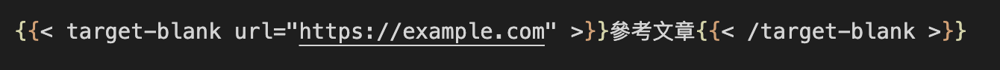

解決 Hugo Markdown 連結無法另開網頁問題
前言
在寫 Markdown 文章時候，想要為 link 添加 {target="_blank"} 屬性參考文章，但卻起不了作用(會變字串)。
這是一個連結[網站](http://example.com){target="_blank"}的示例。
這是在猜想可能是 Hugo 版本不相容，就用上網找了解法，他說：Hugo 的安全模式可能會阻止執行 JavaScript。在安全模式下，Hugo 默認會禁用 JavaScript 和某些 HTML 標籤以增加網站的安全性。
他說可以在config.toml進行配置，禁用 Hugo 的安全模式。
[markup]
[markup.goldmark]
[markup.goldmark.renderer]
unsafe = true
但這個方法是可以執行另開網站，但會有安全性風險，所以我就棄用了。
解決方案：在 Markdown 添加 ShortCodes
步驟 1：在themes/layouts底下新增一個資料夾shortcodes，並建立target-blank.html
並添加以下內容，這個 ShortCode 將創建target="_blank"屬性，並帶兩個參數。
.Get "url"用來指定 Link 的 URL。.Inner用來指定 Link 的 文本。
<a href="{{ .Get "url" }}" target="_blank">{{ .Inner }}</a>
步驟 2：加在想要 Markdown 中
注意 shortCode 命名盡量跟 html 文件名保持ㄧ至。

結語
看完以上內容，可以完成解決 Hugo Markdown 連結無法另開網頁問題，如果以上有問題歡迎討論。